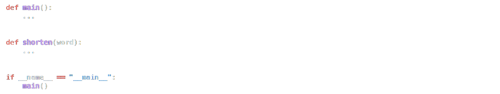

In a file called twttr.py, reimplement Setting up my twttr from Problem Set 2, restructuring your code per the below, wherein shorten expects a str as input and returns that same str but with all vowels (A, E, I, O, and U) omitted, whether inputted in uppercase or lowercase. Then, in a file called test_twttr.py, implement one or more functions that collectively test your implementation of shorten thoroughly, each of whose names should begin with test_ so that you can execute your tests with:
How to Test
Here’s how to test your code manually:
To test your tests, run pytest test_twttr.py. Be sure you have a copy of a twttr.py file in the same folder. Try to use correct and incorrect versions of twttr.py to determine how well your tests spot errors:
Ensure you have a correct version of twttr.py. Run your tests by executing pytest test_twttr.py. pytest should show that all of your tests have passed.
Modify the correct version of twttr.py in such a way as to create a bug. Your program might, for example, mistakenly only omit lowercase vowels! Run your tests by executing pytest test_twttr.py. pytest should show that at least one of your tests has failed.
You can execute the below to check your code using the code below, but be sure to test it yourself as well!
Check/python/week5/twitterGreen smilies mean your program has passed a test! Red frownies will indicate your program output something unexpected. Goodluck 😊